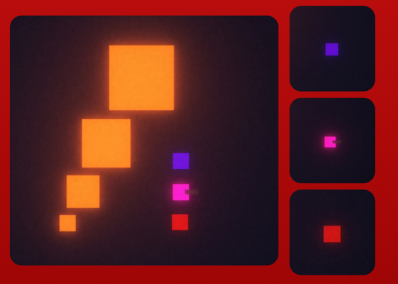

Every move on the beat
The Last Beat is a 2D top-down rhythm shooter where dashing, shooting and reloading only work on the beat.
The music speeds up as you survive, new enemies arrive every minute, and upgrades help you keep up. I first made it in 2023, and in 2026 I went back to it to redo the UI and keep polishing it, using what I'd learned since.
Designing within limits
The Last Beat began from a simple class brief, but I put far more into it than the brief asked for and kept working on it for a few weeks after. Its creative limitations shaped every decision I made.
5 minutes
The game had to last 5 minutes.
One hand
It had to be playable with just 1 hand.
Something I love
It had to be centered around something I love. I chose music.
My focus
- Create and refine a rhythm-based combat system
- Challenge myself to develop a complete game independently
- Create an appealing visual style despite my limited 2D/3D art experience
- Design and balance progressive difficulty through playtesting and feedback
- Create VFX and audiovisual feedback to make combat feel impactful
- Compose, mix, and master the soundtrack around the game's rhythm-based mechanics
- Implement the game's UI, designed by a classmate
Synced to the music
Designed a rhythm-based combat system where player movement and attacks are synchronized with the music. Combat progressively becomes faster as the song changes, with new enemy types introduced every minute to increase the challenge.
On the beat
The player's core mechanics are built around rhythm: players can only execute actions like dashing, shooting, and reloading when they are on beat.
Upgrades
Players can get experience from killing enemies to upgrade their stats, to be able to face the increasing difficulty.

Escalating waves
New enemy types are introduced every minute to increase the challenge, and the BPM rises with each song, increasing the pacing and the difficulty.
Music & sound
Music composition
The music was designed to establish the game's musical identity and directly support its rhythm-based gameplay. The soundtrack follows a consistent 4-to-the-floor electronic style, creating a strong and predictable rhythmic foundation for combat.
Each track increases in BPM and intensity as the player progresses, matching the increasing difficulty of the game.
Sound implementation
Created and implemented all sound effects using Unity's audio system, ensuring that player actions, enemy interactions, combat, and gameplay events have clear and responsive audio feedback.
Polish over features
- Fun core actions: a big part of the process was finding how the player's core actions could be fun and entertaining.
- A living map: making elements move to the beat, to help the game feel more alive and help players stay on beat.
- Game feel: creating VFX and an upgrade system to give the player a sense of progression and create meaningful gameplay.
I had plans to create extra classes and weapons, each with a different beat attached to them, but they were out of scope for the time I had. I made an early decision to focus on smaller things and create a more polished game instead.
Going back to it
The Last Beat was a project that was really special to me. In the 2023 version, the UI was designed by a classmate and implemented by me.
After studying game design and UI/UX design, I went back to it to redo the UI myself and keep polishing the game: an opportunity to improve something I cared about, and to hone my UI/UX skills along the way.
What stayed, what changed
The core stayed the same: every action on the beat. The update focused on the interface, the audio and how the game feels to play.
Main menuFrom the original red menu to a main menu I designed in Figma, with an animated background that pulses on the beat.
Design first, then build and tune
The focus was as much on the player's experience as on the look: information that's easy to read at a glance, a simple flow, and clear feedback on every action. I designed every screen in Figma first, rebuilt them in Unity as a reusable UI kit, then tuned the motion, timing and balance in-game through rounds of feedback. Along the way I upgraded the project to Unity 6 and fixed long-standing bugs.
A new interface, designed by me
- New fonts, one button style, and panels and cards that share the same outline
- A HUD with time, the beat bar and the score at the top centre, and the XP bar along the top edge
- Level-up cards that show each stat's current and new value
- A simpler main menu, with How to play moved into the pause menu as Controls
- One results screen for wins and deaths, with clear states when submitting a score
- Layouts that adapt to any screen shape
- Motion on the UI with tweens (DOTween): buttons react to hover, press and click, screens animate in and out, and elements pulse on the beat
The component library
Built in Figma first, then exported and used to rebuild every screen in Unity.
Rebalancing the run
- Progression: a new XP curve from a balance sheet, and leftover XP carries into the next level
- Power-ups: clearer rules for when and how often each type appears
- Everything on the beat: auto shoot fires on the off-beat, shooting enemies fire every other beat, and enemies path around walls
Supporting the design
I moved all music and sound to FMOD, so the beat clock, the countdown and the UI's pulse follow the music, and added a subtle CRT screen effect, shaders that pulse on the beat, and an in-game UI Lab to tune motion and colours live. Along the way I fixed small timing details, like beat bar ticks that disappeared early and a HUD that flickered when the music started.
The updated interface, screen by screen
Click any screen to see it larger.
What going back taught me
AI as a tool
I experimented with AI tools during the update, not to generate content, but as a tool to support my workflow.
Small details, big polish
Small things like transitions and screen effects make a game feel much more polished.
Style, fonts & Unity
I learned more about building a visual style, working with fonts, and creating UI in Unity.
Debug tools
I explored building debug tools, like an in-game debug panel, to test the game.